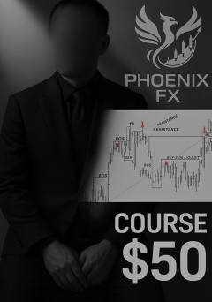

MSForex bozorida 10 pips foyda olish uchun texnik tahlil va savdo strategiyalari qo'llanmasi.
Ushbu qo'llanma Forex bozorida 10 pips foyda olishga qaratilgan texnik tahlil strategiyalarini tushuntiradi. Unda H1 va LTF (15 daqiqalik) grafiklaridan foydalanib, bozor tuzilishi (BOS), likvidlikni yig'ish va Market Structure Shift (MSS) signallarini aniqlash usullari bayon etilgan.